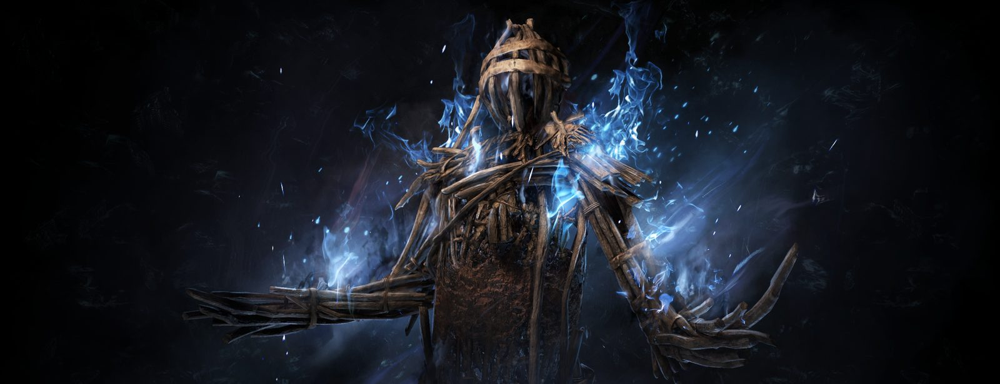
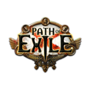
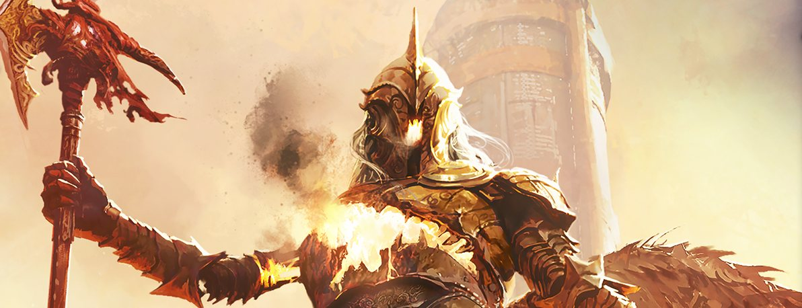
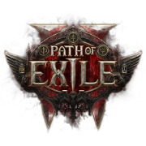

Exile Catch-Up
Which game are you catching up on?
Patch notes, one change at a time, with the backstory attached. Pick a game to start.
-


Path of Exile Covens of Umbra Stop the Coven’s rites, pick Fates for the boss, and Threads replace Scarabs. Read the 3.30 changes -


Path of Exile 2 Return of the Ancients A rebuilt endgame, Remnant crafting and two new ascendancies. Version 1.0 arrives 11 December 2026. Read the 0.5 changes